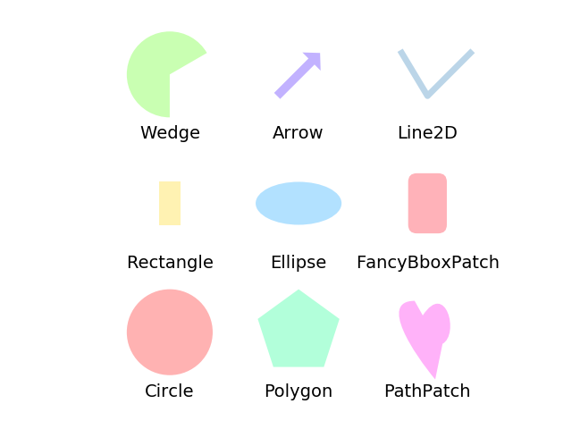

Version 2.1.2
This example displays several of matplotlib’s graphics primitives (artists) drawn using matplotlib API. A full list of artists and the documentation is available at http://matplotlib.org/api/artist_api.html.
Copyright (c) 2010, Bartosz Telenczuk BSD License
import matplotlib.pyplot as plt
import numpy as np
import matplotlib.path as mpath
import matplotlib.lines as mlines
import matplotlib.patches as mpatches
from matplotlib.collections import PatchCollection
plt.rcdefaults()
def label(xy, text):
y = xy[1] - 0.15 # shift y-value for label so that it's below the artist
plt.text(xy[0], y, text, ha="center", family='sans-serif', size=14)
fig, ax = plt.subplots()
# create 3x3 grid to plot the artists
grid = np.mgrid[0.2:0.8:3j, 0.2:0.8:3j].reshape(2, -1).T
patches = []
# add a circle
circle = mpatches.Circle(grid[0], 0.1, ec="none")
patches.append(circle)
label(grid[0], "Circle")
# add a rectangle
rect = mpatches.Rectangle(grid[1] - [0.025, 0.05], 0.05, 0.1, ec="none")
patches.append(rect)
label(grid[1], "Rectangle")
# add a wedge
wedge = mpatches.Wedge(grid[2], 0.1, 30, 270, ec="none")
patches.append(wedge)
label(grid[2], "Wedge")
# add a Polygon
polygon = mpatches.RegularPolygon(grid[3], 5, 0.1)
patches.append(polygon)
label(grid[3], "Polygon")
# add an ellipse
ellipse = mpatches.Ellipse(grid[4], 0.2, 0.1)
patches.append(ellipse)
label(grid[4], "Ellipse")
# add an arrow
arrow = mpatches.Arrow(grid[5, 0] - 0.05, grid[5, 1] - 0.05, 0.1, 0.1,
width=0.1)
patches.append(arrow)
label(grid[5], "Arrow")
# add a path patch
Path = mpath.Path
path_data = [
(Path.MOVETO, [0.018, -0.11]),
(Path.CURVE4, [-0.031, -0.051]),
(Path.CURVE4, [-0.115, 0.073]),
(Path.CURVE4, [-0.03, 0.073]),
(Path.LINETO, [-0.011, 0.039]),
(Path.CURVE4, [0.043, 0.121]),
(Path.CURVE4, [0.075, -0.005]),
(Path.CURVE4, [0.035, -0.027]),
(Path.CLOSEPOLY, [0.018, -0.11])]
codes, verts = zip(*path_data)
path = mpath.Path(verts + grid[6], codes)
patch = mpatches.PathPatch(path)
patches.append(patch)
label(grid[6], "PathPatch")
# add a fancy box
fancybox = mpatches.FancyBboxPatch(
grid[7] - [0.025, 0.05], 0.05, 0.1,
boxstyle=mpatches.BoxStyle("Round", pad=0.02))
patches.append(fancybox)
label(grid[7], "FancyBboxPatch")
# add a line
x, y = np.array([[-0.06, 0.0, 0.1], [0.05, -0.05, 0.05]])
line = mlines.Line2D(x + grid[8, 0], y + grid[8, 1], lw=5., alpha=0.3)
label(grid[8], "Line2D")
colors = np.linspace(0, 1, len(patches))
collection = PatchCollection(patches, cmap=plt.cm.hsv, alpha=0.3)
collection.set_array(np.array(colors))
ax.add_collection(collection)
ax.add_line(line)
plt.axis('equal')
plt.axis('off')
plt.tight_layout()
plt.show()
Total running time of the script: ( 0 minutes 0.045 seconds)